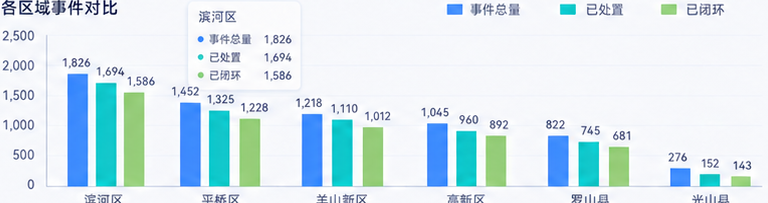
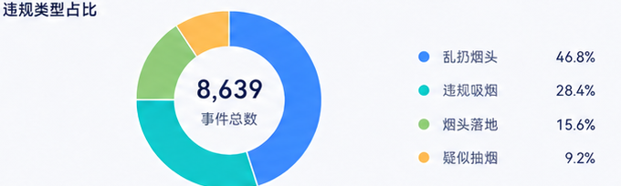

事件总量
8,639
较上期 ↑ 12.6%


| 统计日期 | 所属区域 | 事件总量 | 已处置 | 已闭环 | 待处置 | 闭环率 | 平均处置时长 |
|---|---|---|---|---|---|---|---|
| 2026-08-24 | 滨河区 | 1,826 | 1,694 | 1,586 | 132 | 86.9% | 32分钟 |
| 2026-08-24 | 平桥区 | 1,452 | 1,325 | 1,228 | 127 | 84.6% | 36分钟 |
| 2026-08-24 | 羊山新区 | 1,218 | 1,110 | 1,012 | 108 | 83.0% | 40分钟 |
| 2026-08-24 | 高新区 | 1,045 | 960 | 892 | 85 | 85.4% | 35分钟 |
| 2026-08-24 | 罗山县 | 822 | 745 | 681 | 77 | 82.8% | 42分钟 |
| 2026-08-24 | 光山县 | 276 | 152 | 143 | 124 | 51.8% | 45分钟 |